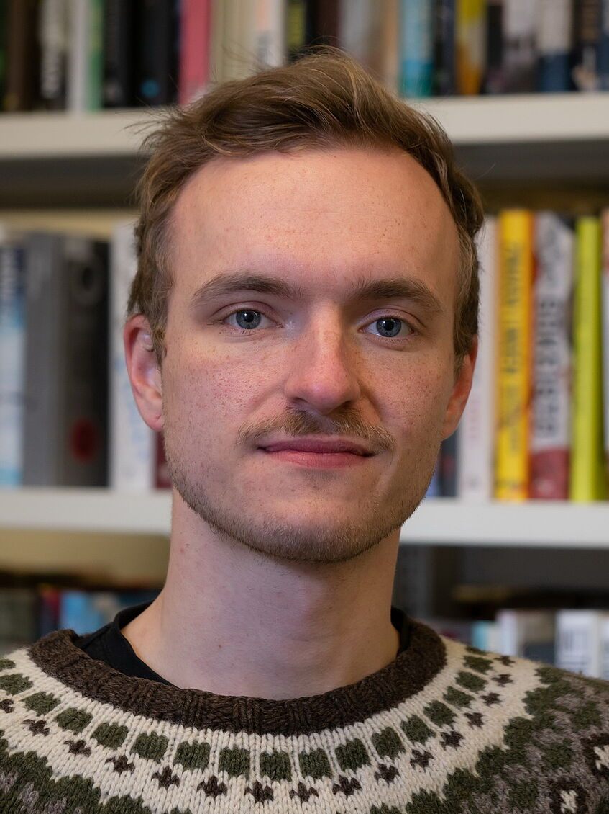

|  |
I am a doctoral student at Ludwig-Maximilians-Universität München.
In my dissertation I explore the effect of language contact on the system of negative indefinite pronouns and adverbs, focussing on languages in contact with Russian. I have previously worked on a number of topics in Meadow Mari, including Null Subjects, Negative Concord, and Information Structure. Furthermore, I have worked on Null Subjects in Livonian, and the morphophonology of the Estonian short illative or additive. Other current and future research interests: discoursive functions of possessive suffixes in Meadow Mari, the Volga-Kama Region as linguistic area, diachronic studies on the morphosyntax of smaller Uralic languages. We are organizing a linguistics student conference at Universität Wien, Österreich: spraWIEN! Get in touch! |
Proud father of twins born in 2020.
I was born in Vienna to Austrian-Finnish and Finnish parents. I pronounce my name with Austrian German [jɔˈhanɛs ˈhɪɐvɔnɛn] or Finnish phonetics [ˈjohɑnːes ˈhirʋonen]. I only insist on the initial stress on my last name in any case.
I believe in walking, cycling and public transport as efficient and sustainable forms of individual mobility.
Some of my sample-based music can be found on Soundcloud.
{kind=link}